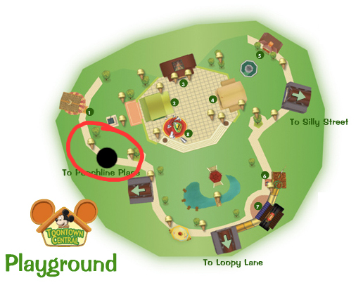
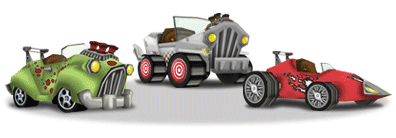
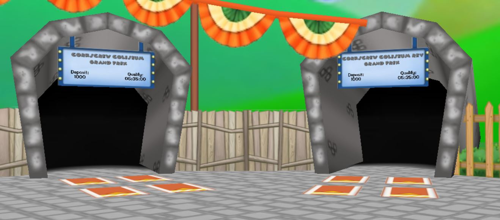
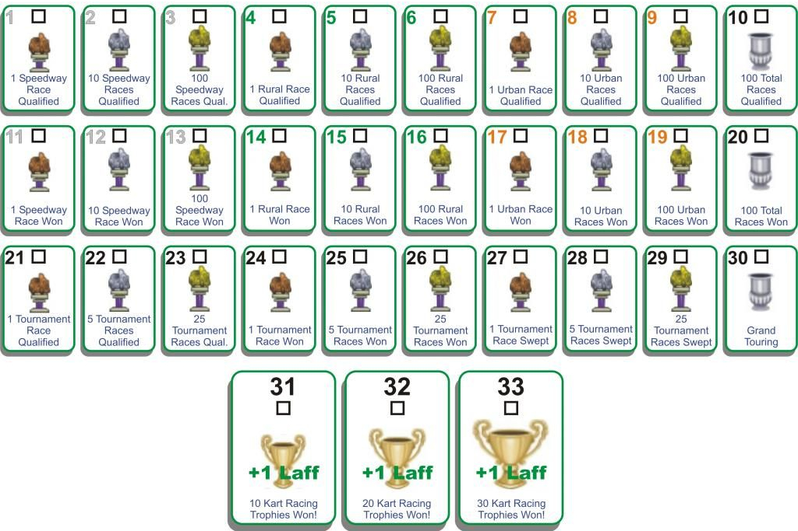

Racing?! In Toontown!? G'arsh! Racing is a super fun activity and an exhilarating way to earn 3 additional laff points for your toon. It is also a fantastic way to spend time with toon friends! Are you ready to cross the finish line? Any toon at any level can head on over to the speedway and race all day and all night!
You might be asking, where do I go to race? Goofy Speedway! Goofy Speedway can be found through a tunnel, resembling a tire, located in Toontown Central (circled below). This is right past Toon HQ, next to the Clothing Shop. Once visited, a toon will automatically recieve teleport access to the playground.
At Goofy Speedway, a toon can purchase their very own kart, earn tickets by racing on the tracks, set/beat time records, and earn trophies by racing other toons. Even though Goofy Speedway is another playground, it is very unlike all of the other main playgrounds across Toontown. There are no fishing ponds or gag shops, but there is a unique kart shop. Likewise, the speedway uses its own form of currency for payouts and rewards.
Unlike the rest of Toontown, jellybeans is not a valid form of payment at Goofy's Speedway. Here, tickets are used to purchase accessories, karts, join battle races, and join grand prix races. Tickets cannot be used anywhere else in Toontown, only at Goofy Speedway. However, do not try to eat tickets, they are not as tasty as jellybeans.
A toon should never loose any tickets, besides when purchasing a racing item. Any race completed will provide some sort of profit as a reward. The only time tickets would be lost is if a race is started but never completed.
In order to race on the tracks, a toon must purchase a kart, which can be done at the Kart Shop! Every toon starts out with 200 tickets, which allows them to buy the cheapest kart avaliable: the almighty Cruiser. Also avaliable are kart accessories and paint jobs, but this is all cosmetic and, honestly, can make a kart look super fast and cool. To access purchased acessories, open the Shticker Book and navigate to the driving wheel symbol. Navigate to the "Customize" tab and customize away!
From left to right: Cruiser, Toon Utility Vehicle, and Roadster
To join a race, walk up to one of the six race tunnels in the Speedway. There are four spots in front of each tunnel, approach one and a popup box asking if you would like to join a race will appear. Information for a race is shown on boards displayed on each race tunnel. There is a regular and a rev choice, where rev stands for the reverse version of a track.
Toons can race on a variety of tracks to earn tickets, which in turn are used to enter more races or upgrade/enhance karts. While in a race, to move the kart, use the arrow keys ←↑→↓. AWSD is not a valid controlling method in toon racing. Press CTRL to use an attack.
Toons can also set records for the current district they are in. In the middle of the speedway playground is a score board that displays the high scores for each track. Toon records are stored in the Shticker Book. If a new record is set upon completing a race, a toon will earn an additional 1000 tickets! Records are not applicable to practice races.
Practice races require no ticket deposit to enter and can be raced solo. There are no attack items to collect on the track, just driving around the track. Each toon in the practice race will receive 20 tickets for qualifying at the end. Trophies cannot be earned by doing practice races and records cannot be set. Practice races are a great way to become familar with a track layout and get a feel for controlling a kart on it.
For battle races, toons must race in a party of 2 to 4 toons. Dissimilar to practice races, battle races have payouts and deposits. Finishing in a higher place will earn a toon more tickets as a reward. Most trophies are earned through toon battle races and records can be set and beat during these races.
While racing, on the track there will be item boxes. Upon collecting one, a toon will be given a random attack to use, similar to how Mario Kart works! There are four different types of attacks, each with a different purpose:
| Attack | Description |
|---|---|
| Banana Peel | Drops a banana peel behind the driving kart, waiting for a passerbyer to hit it |
| Whole Cream Pie | Throws a giant whole cream pie towards a leading toon. Splatters cream on the hit toons screen |
| Turbo Boost | Gives a boost of speed, allowing for larger lead or catch up |
| Anvil | Drops a giant anvil on the 1st place kart, causing them to come to a full stop |
Grand Prix races have the same rules as Toon Battle races. But in these types of events, toons will races through three tracks in a row (speedway, rural, and urban). These types of race events is where a toon will earn sweeping trophies, which mean one toon wins all three races in the series. Grand Prix races are available on Mondays.
There 6 total available tracks to race on at Goofy Speedyway. Racing on each one at least one time will earn a toon the Grand Touring trophy. The list below is in order of length, difficulty, ticket deposit, and ticket reward (top to bottom:lowest to greatest).
Here is the exciting part... There are 3 earnable laff points through kart racing! How does one get them? By earning trophies of course. There are 30 available racing trophies and for every 10 earned, a laff point is earned. Sounds easy right? Well, I'll let you make that judgement...
